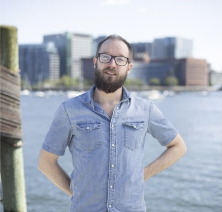

About
 ```I'm a writer and communicator who makes complex things clear. Over the last decade I've documented enterprise software for Microsoft, crafted donor campaigns for environmental nonprofits, and written policy content for criminal justice reform.
I grew up in the Boston area and built my career there through 2021. When the industry tightened and cost of living became unsustainable, I relocated to Philadelphia, then Buffalo. I'm currently in Niantic, Connecticut with family and two dogs.
I've been making music and doing comedy for years. I write constantly. Out of that passion for creating things people react to, I've built a career in communications and marketing. I learn new tools quickly, communicate human stories effectively, and turn complex information into accessible content.
I'm looking for work with environmental organizations, mission-driven nonprofits, and companies that need technical documentation, UX writing, internal communications, and content strategy. I have a decade of proven experience, adapt fast, and produce work that serves its purpose.
```